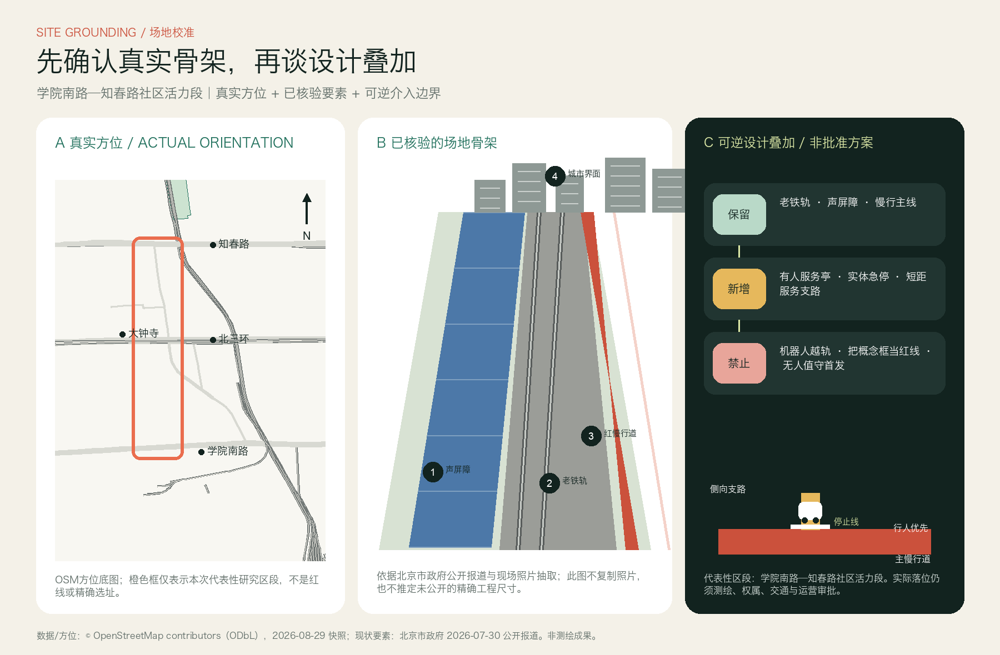
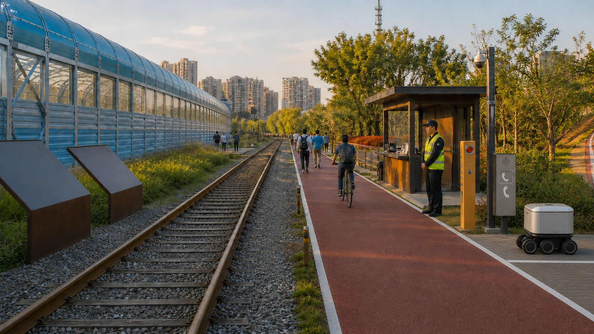
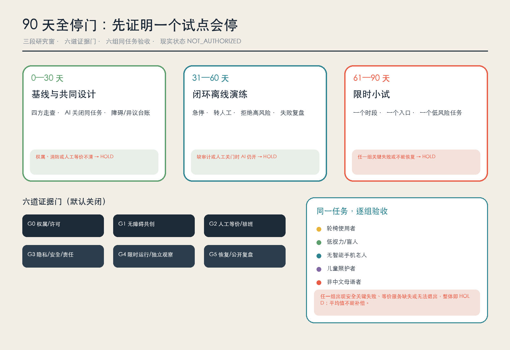
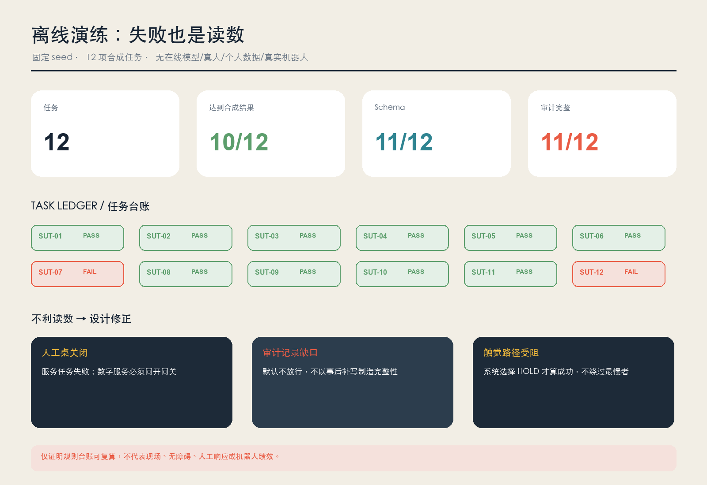
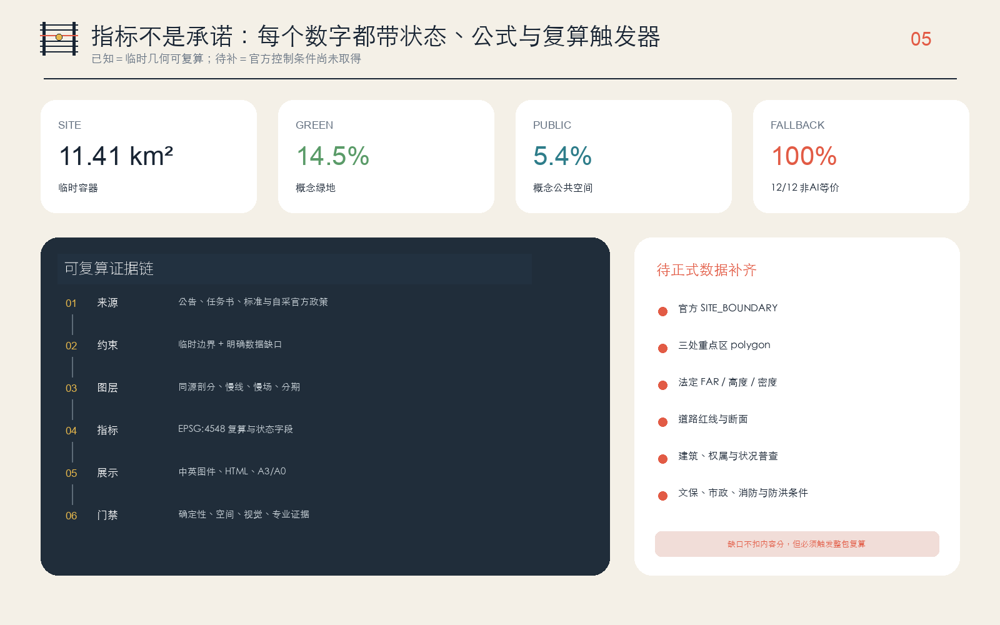

京张慢线｜让城市跟上最慢的人
技术越快，城市越要确认没有人被留在站外。
先回答：它在哪里，什么必须保留
代表性区段选在学院南路—知春路社区活力段。方位来自署名的 OSM 快照；老铁轨、蓝色声屏障、东侧红色慢行道和社区界面来自北京市政府公开报道。橙色框不是红线，图件不是测绘成果。

在真实骨架上，只增加可撤回的小动作
修复老铁轨、声屏障和红色慢行主线保持不动；真人服务亭、实体急停与侧向铺装支路属于概念叠加。机器人在线后等待，不进入主慢行道，也不跨越铁轨。生成图受公开现场要素约束，但仍不是现场照片或官方效果图。

从十二张卡到一个能停止的 90 天样板

六组同任务分列验收
轮椅、低视力/盲人、无智能手机老人、儿童照护者、非中文母语者、骑手/夜班运维者；任一组关键失败，整体 HOLD。
失败没有被藏起来

空间与证据仍可复算



审查导航：任务覆盖与证据位置
下列栏目把必审任务直接连接到本页图件与结构化文件；它们不是新增的现场结论。
总览地图 · 三层范围 · 重点区域
总体容器、研究—总体—重点区关系和三处临时重点区见空间图组。
用地分区 · 建筑 · 更新项目
概念用地、程序载体包络与九项责任/退出优先的项目清单均保持可复算。
交通慢行 · 蓝绿公共空间
慢线、六座全停门、应急净空、连续绿荫和公共空间共同接受性能门。
AI 场景 · 核心指标 · 任务覆盖
十二张场景卡、非 AI 等价、试点门与离线演练读数对应 proposal、metrics 和 simulation。
自检状态
确定性、空间、视觉包装和专业证据四门结果写入 self_check.json。
来源 · 假设
来源权威级别、适用边界和待验证假设分别登记在 sources.json 与 assumptions.json。